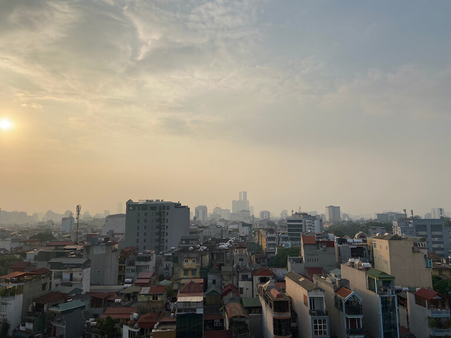
Lässt sich bereits vom Rooftop erahnen. (Verkehrs-)Chaos pur und absolut sehenswert. Irgendwie funktioniert's auch so in Hanoi.
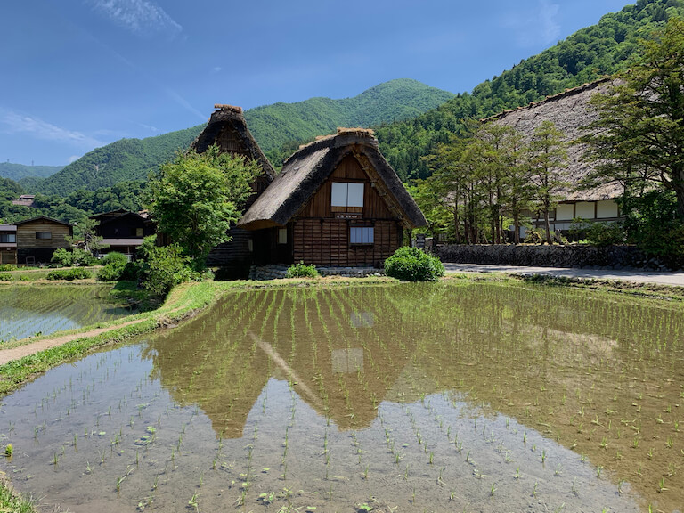
Auf einer geführten Japan-Rundreise in diesem historischen Dorf gelandet. Shirakawa-go wurde von der UNESCO zum Weltkulturerbe erklärt.
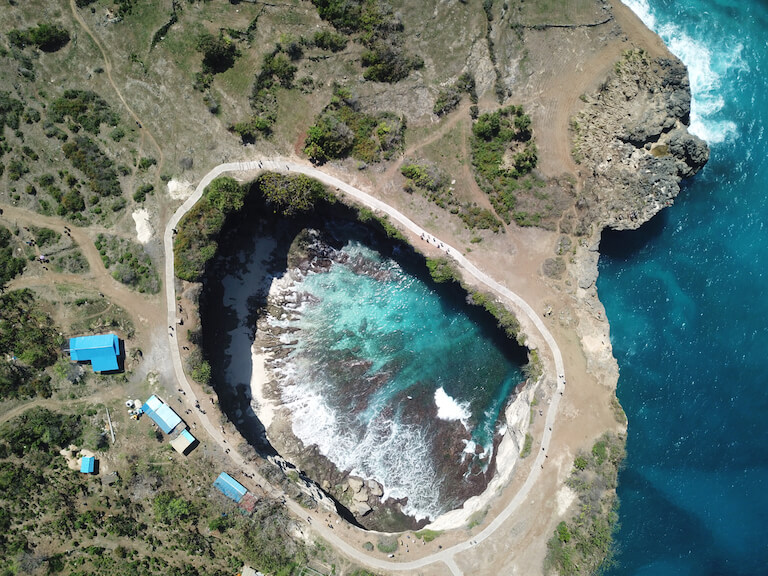
Broken Bay, Nusa Penida, Indonesien
Die Broken Bay auf Nusa Penida aus der Vogel-, eh, Drohnen-Perspektive. Neben der Kelingking-Beach ein Must-see auf der Insel vor Bali.
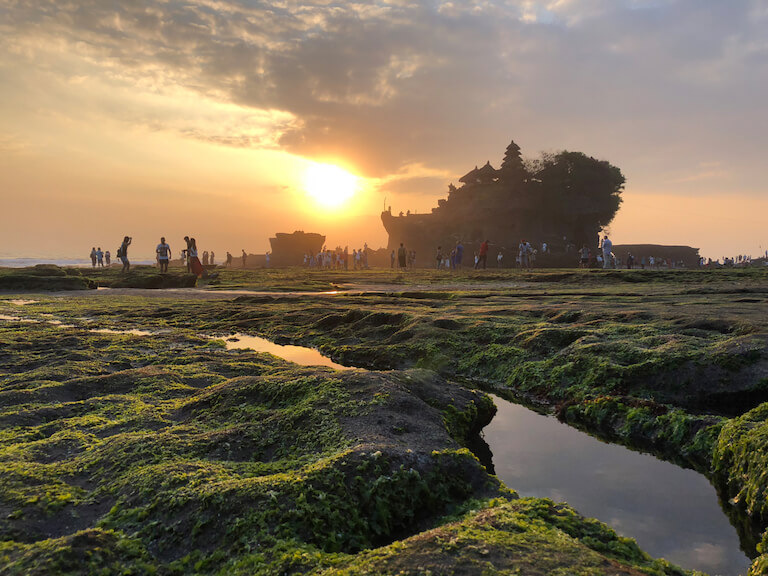
Tanah Lot, Bali, Indonesien
«No filter needed»: Umwerfend schön und während der Flut von Wasser umgeben: der Tempel von Tanah Lot auf Bali.
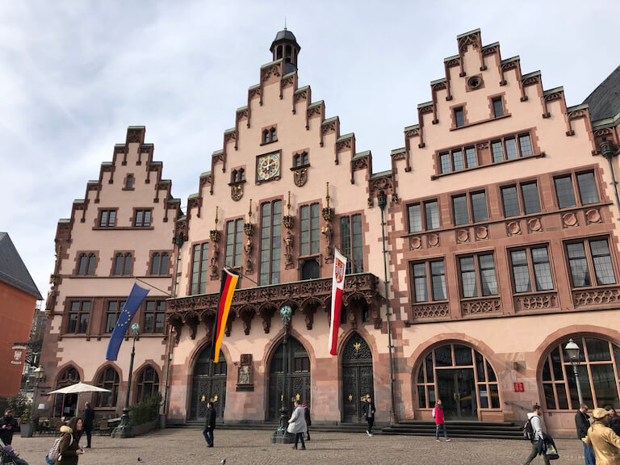
Römer, Frankfurt, Deutschland
Der Römer ist das Rathaus von Frankfurt. Foto, und wieder eine Sehenswürdigkeit weniger auf der Liste 😉
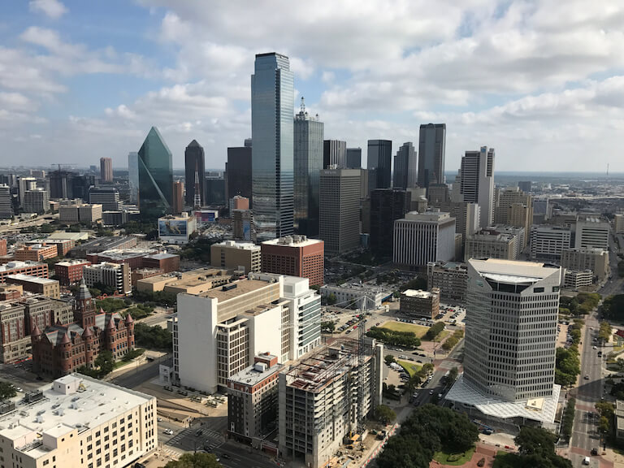
Reise-Tipp für Dallas: Vom Reunion Tower die tolle Aussicht auf die Skyline geniessen.
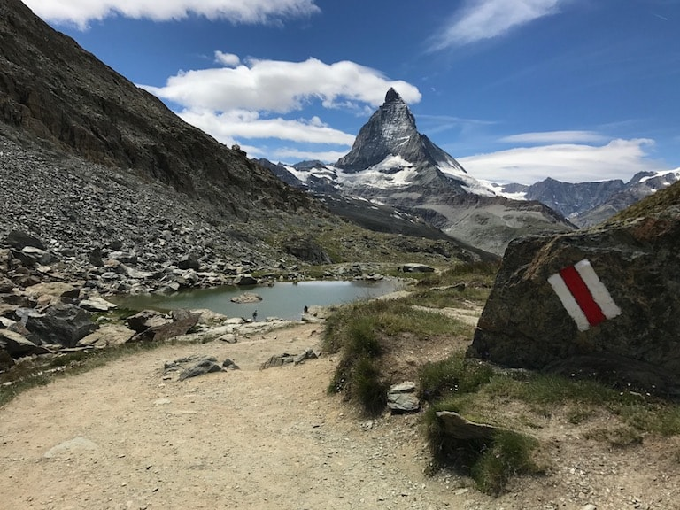
Matterhorn, Zermatt, Schweiz
Hat tatsächlich 30 Jahre gedauert, bis ich das Matterhorn zum ersten Mal gesehen habe. Foto-Spot liegt auf dem Wanderweg zwischen Zermatt und dem Gornergrat.
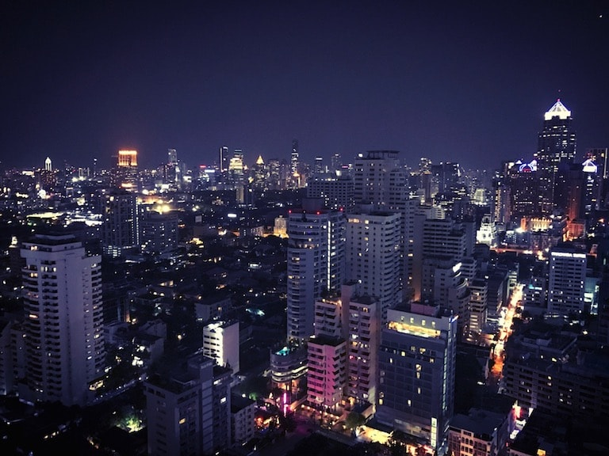
Bangkok by Night. Die Nacht zum Tag machen. Nuff said.
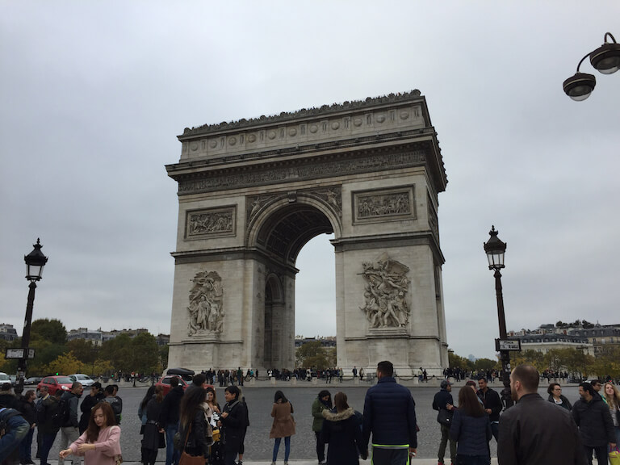
Arc de Triomphe de l’Étoile, Paris, Frankreich
Der Triumphbogen hat übrigens eine Aussichtsplattform. War ich allerdings (noch) nicht oben.
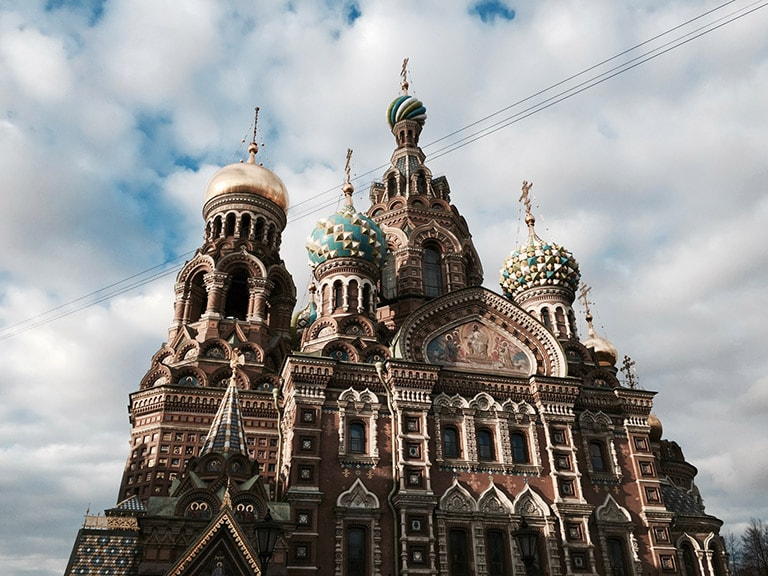
Auferstehungskirche, Sankt Petersburg, Russland
Nicht die Basilius-Kathedrale in Moskau, aber definitiv Russland. In Sankt Petersburg findet man die Auferstehungskirche. Charakteristisch auch hier: die Zwiebeltürmchen.
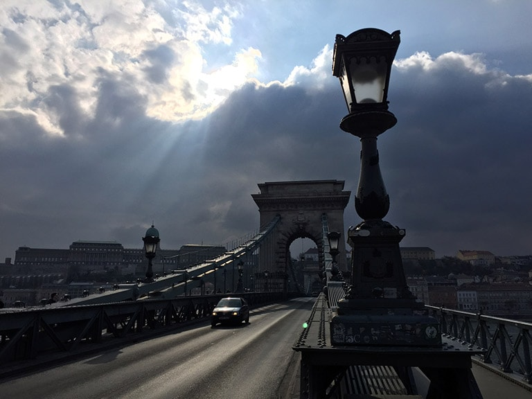
Kettenbrücke, Budapest, Ungarn
Die Kettenbrücke in Budapest verbindet die beiden Stadtseiten Buda und Pest. Buda ist die hügelige Stadtseite rechts der Donau (auf dem Foto zu sehen) und Pest die flache, linke Flussseite.
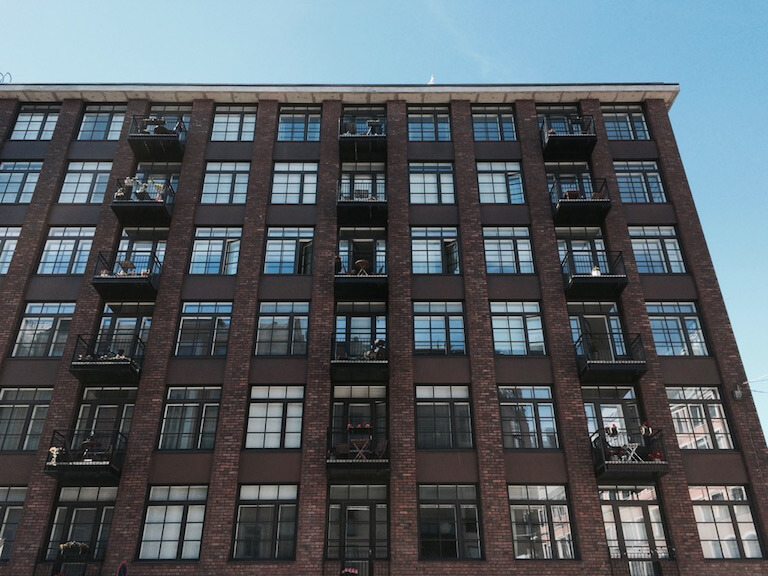
Modernes skandinavisches Design – aussen und wahrscheinlich auch innen.
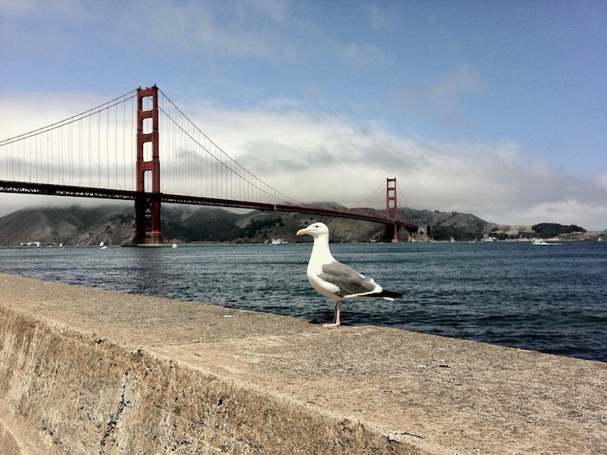
Golden Gate Bridge, San Francisco, USA
Die Golden Gate Bridge ist immer noch auf Platz 14 der längsten Hängebrücken der Welt.
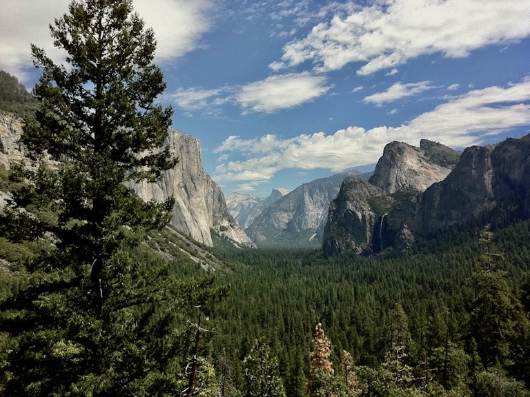
Yosemite Valley, Kalifornien, USA
Noch bekannter geworden durch das Apple Desktop-Betriebssystem OS X 10.10. Der «Yosemite»-Nationalpark in Kalifornien.
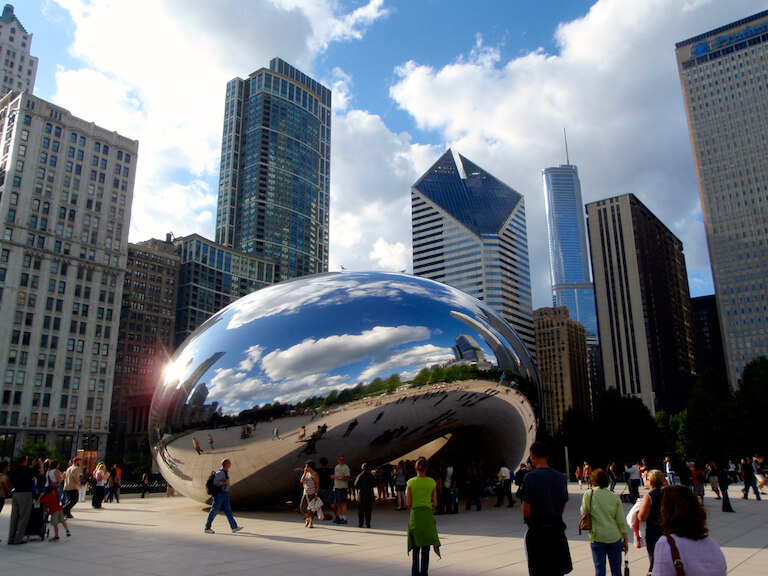
Im Millennium Park in Chicago: Das Cloud Gate aka «The Bean».
Die Grosse Sphinx von Gizeh, Kairo, Ägypten
Sphinx und Chephren-Pyramide im Hintergrund. Zweck der Sphinx ist bis heute ungeklärt.